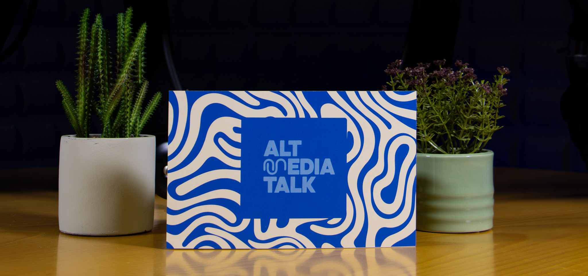
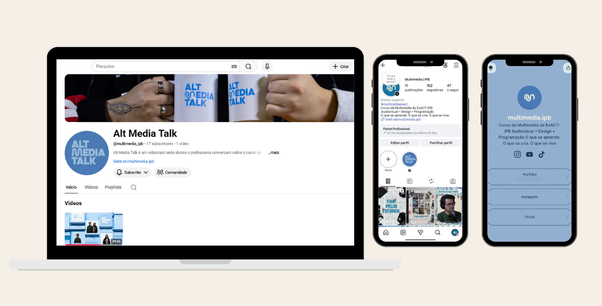

MULTIMÉDIA
EsACT-IPB
Projeto académico desenvolvido para divulgar a Licenciatura em Multimédia do Instituto Politécnico de Bragança através de uma estratégia de comunicação digital. O objetivo foi reunir, num único espaço, todas as plataformas do curso, tornando a informação mais acessível para futuros estudantes.
Informação
Tipo
Projeto Académico
Ano
2026
Cliente
Licenciatura em Multimédia - IPB
Sobre o Projeto
O projeto Multimédia IPB foi desenvolvido com o objetivo de reforçar a presença digital da Licenciatura em Multimédia do Instituto Politécnico de Bragança. Através da criação de uma página Linktree, foi possível reunir, num único local, todas as plataformas do curso, incluindo redes sociais, website, contactos e outros recursos importantes para estudantes e futuros candidatos. O foco principal foi criar uma comunicação clara, organizada e moderna, permitindo um acesso rápido às diferentes plataformas e melhorando a experiência do utilizador.
Galeria

Explorar o Projeto
A página Linktree reúne todas as plataformas da Licenciatura em Multimédia, facilitando o acesso à informação e promovendo o curso através de uma comunicação digital simples e intuitiva.
Visitar Linktree